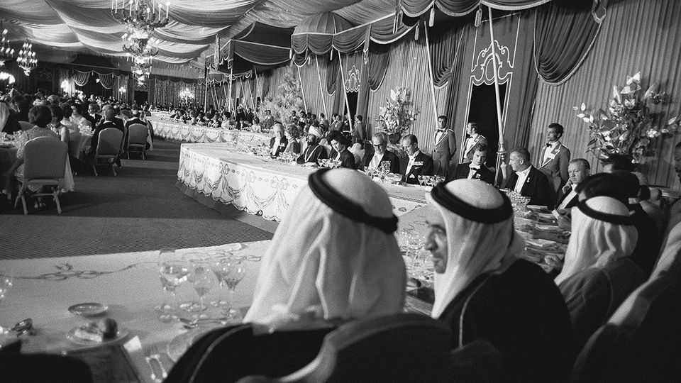

Fancy a tour through the Middle East?
A new history of the region takes you across thousands of miles and more than a century

Oct 8th 2026
By some accounts it was the most expensive party in history. To commemorate the 2,500th anniversary of the founding of the Persian empire, Muhammad Reza Pahlavi, the last shah of Iran, invited kings, queens, emperors and presidents to celebrate in a lavish encampment amid the ancient ruins of Persepolis. Guests sipped champagne from Moët & Chandon and wine from Château Lafite Rothschild. They feasted on food from Maxim’s of Paris and gawked at 50,000 imported songbirds. (The creatures all died in the heat.)
Iranians were outraged by the excess. “We can hardly offer them bread and radishes,” came the shah’s tone-deaf retort. For Ayatollah Ruhollah Khomeini, the architect and father of Iran’s revolution, the party was the “devil’s festival”. It marked the beginning of the end of the shah’s rule. Seven years later, the shah fled from the country. Those close to him were executed. Even his horse was publicly tortured and shot. The party was over.
In a previous book, Simon Sebag Montefiore, a British historian, took on the history of the world. “The Cauldron”, his latest work, is somehow even more ambitious: it tackles the history of the Middle East since 1900. You might wonder whether there is much new to be said on the subject. Rich histories of the Arabs abound. The conflict between the Israelis and Palestinians has generated, by Mr Montefiore’s own admission, “a veritable industry” of analysis. Countless tomes pick through the diplomacy, wars and revolutions that have shaped the region.
Mr Montefiore’s contribution distinguishes itself in a number of ways. He takes on the entire middle, including Turkey, Iran, Israel and the Arab countries: this is a surprisingly rare approach. More than that, he brings the reader to the present day, analysing events that continue to unfold. He aims to “lighten the heavy matters of religion, geopolitics and ideology” by telling this history through “human stories, often those of rulers”. And Mr Montefiore aspires to restore “some balance” to the way those in the West look at the Middle East. None is an easy task.
Yet the sheer scope of “The Cauldron” is breathtaking. He whizzes around the region, from Mustafa Kemal Ataturk battling Allied troops in 1915 to Riyadh, as it was seized by Abdulaziz bin Abdul Rahman al-Saud to establish the kingdom of Saudi Arabia in 1932. Then the book marches onwards, through the founding of Israel, the Iranian revolution, the horror of Sudan’s civil war and the bloodshed of the past three years.
The breadth of the book inevitably means depth is sacrificed. The Armenian genocide of 1915-16 is dealt with in less than a page. But Mr Montefiore also manages to include a rich array of details that bring the grand sweep to life (for example the fact that, after America, Iran was the second country to recognise the new state of Israel; or the comment by Gamal Abdel Nasser of Egypt to Leonid Brezhnev that if he were Israel’s leader: “I’d never give up the Occupied Territories.”)
Given just how many of those “human stories” Mr Montefiore races through, he could perhaps have taken a leaf out of one of Dame Jilly Cooper’s tomes and included a cast of characters. It would certainly have been colourful. “The Cauldron” bubbles with personalities, including King Farouk of Egypt, nicknamed “Fat Fucker” by the CIA; Mohammad Mosaddegh, the “pyjama-clad valetudinarian”; and Abolhassan Banisadr, first president of the new Iranian republic, with the “clownish moustache, oversized spectacles and sharp suits of a Nouvelle Vague film director”.
Balance is trickier. He brings it first by writing about the region directly through the prism of its member states, rather than imperialists or invaders. At a time when America is stepping back from its role as the dominant power in the Middle East, and no country looks willing or able to replace it, that is a worthwhile endeavour.
It is especially hard to write about history as it is still being made. His analysis of the attacks of October 7th 2023 and Israel’s response—“the largest, longest and most unrestrained war in its history”—will strike many readers as eminently reasonable. And yet no doubt some will find his judgments too generous to Israel, while other readers consider him too sympathetic to the Palestinians.
But where he is spot on is in the significance he ascribes to the Iranian revolution. The extent to which he weaves Iran into the history of the Middle East, rather than treating it in isolation as so many others do, and highlighting its importance not just to the region but to the world, is one of the book’s signal achievements. He likens its impact to that of the French and Russian revolutions of 1789 and 1917, arguing that, like them, it “changed the world”. The current maelstrom in the Middle East bears out that judgment. ■